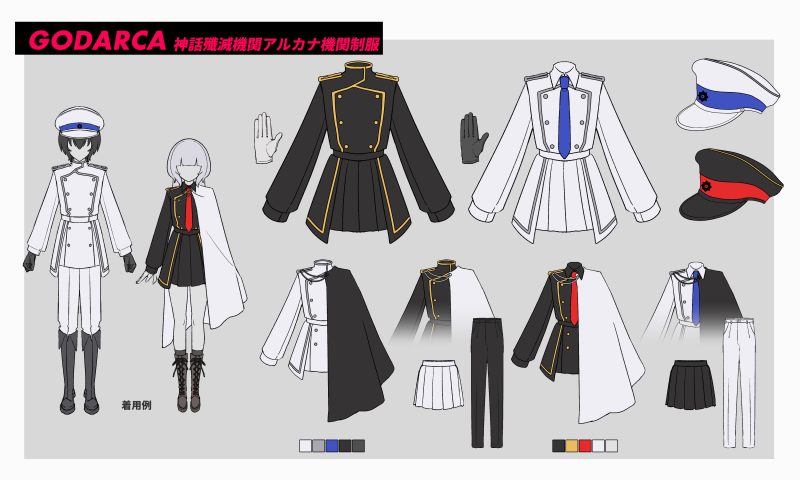

機関制服について
制服は以下の2パターンから選択する。
- 白ベース（銀ライン、青ネクタイ／帽子ライン、黒マント）
- 黒ベース（金ライン、赤ネクタイ／帽子ライン、白マント）
靴はブーツ固定
改変自由ポイント
- 帽子、ネクタイ、マント、手袋の着用の有無（手袋は色自由）
∟マントも機関支給のものと形状が異なるものであれば色自由
- スカート、ズボン、袖、裾、マントの長さ
- 装飾品の追加（髪飾り、刺繍、バッジなど）
- 異性装、露出を増やすなど
改変NGポイント
- 色の変更（白ベース制服で金ラインを使用する、制服の左右で色を変える（※） など）
- 装飾品追加に留まらない、スカートやズボンの形状変化
- そのほか公序良俗に反する改変
※左右で色を変えるのは上層部や憲兵隊など特定の役職の制服になってしまうため、模範的であるべき【原初のアルカナ】については改造NG。
※基本的にはメインカラーさえ変えなければある程度は自由。
改変のOK・NG例
〇マントの裏地の色を変える、帽子の代わりにコサージュをつけるなど
〇折襟の制服だがネクタイを着用しない
〇スカートを長くしてローブのように着用する
〇ズボンをショートパンツにする、スカートをミニスカートにする
×黒制服に青いネクタイ、白制服に支給の白マント、制服のライン（パイピング）の削除など
×黒い帽子の腰色を青にする、白い帽子の腰色を赤にするなど、帽子の色の組み合わせの変更
━━━━━━━━━━━━━━━━━━━━━━━━━
■機関制服について
━━━━━━━━━━━━━━━━━━━━━━━━━
制服は以下の2パターンから選択する。
- 白ベース（銀ライン、青ネクタイ／帽子ライン、黒マント）
- 黒ベース（金ライン、赤ネクタイ／帽子ライン、白マント）
靴はブーツ固定
--------------------------------------------
改変自由ポイント
--------------------------------------------
- 帽子、ネクタイ、マント、手袋の着用の有無
∟マントは機関支給のものと形状が異なるものであれば色も自由
- スカート、ズボン、袖、裾、マントの長さ
- 装飾品の追加（髪飾り、刺繍、バッジなど）
- 異性装、露出を増やすなど
--------------------------------------------
改変NGポイント
--------------------------------------------
- 色の変更（白ベース制服で金ラインを使用する、制服の左右で色を変える（※） など）
- 装飾品追加に留まらない、スカートやズボンの形状変化
- そのほか公序良俗に反する改変
※左右で色を変えるのは上層部や憲兵隊など特定の役職の制服になってしまうため、模範的であるべき【原初のアルカナ】については改造NG。
※基本的にはメインカラーさえ変えなければある程度は自由。
--------------------------------------------
改変のOK・NG例
--------------------------------------------
〇マントの裏地の色を変える、帽子の代わりにコサージュをつけるなど
〇折襟の制服にネクタイを着用しない
〇スカートを長くしてローブのように着用する
〇ズボンをショートパンツにする、スカートをミニスカートにする
×黒制服に青いネクタイ、白制服に支給の白マント、制服のライン（パイピング）の削除など
×黒い帽子の腰色を青にする、白い帽子の腰色を赤にするなど、帽子の色の組み合わせの変更
copy completed
依頼で立ち絵を用意するPLの方へ：
立ち絵依頼の際に、制服資料や機関エンブレムを共有していただくことは規約違反にあたりません。
ただし、公開skebなど、依頼のやり取りに無関係な第三者にも共有画像が閲覧・DLできる状況での使用につきましては禁止といたします。
【GODARCA】および【GODARCA ドゥームズデイ】の立ち絵依頼以外での第三者への共有はご遠慮ください。
copy completed